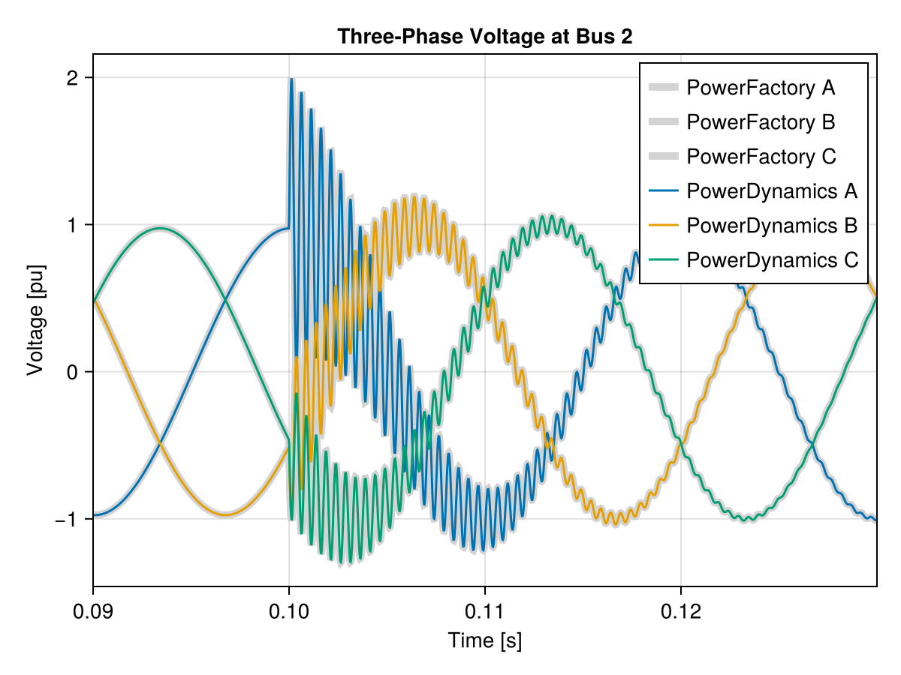
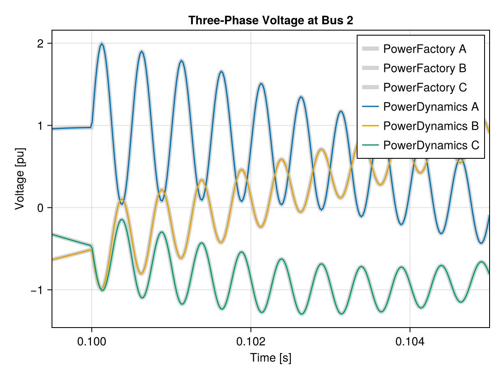

EMT Toy Model Example
This script can be downloaded as a normal Julia script here.
This example demonstrates an electromagnetic transient (EMT) simulation of a simple two-bus system using PowerDynamics.jl. The system consists of a slack bus connected to a load bus through an RL transmission line, with the load bus having both a dynamic PQ load and a capacitive shunt element.
We compare our simulation results with PowerFactory reference data to validate the EMT modeling approach.
This is a pedagogical example that demonstrates the modeling concepts in PowerDynamics.jl are generally compatible with EMT simulations. However, this is far from being an actual interesting simulation study. The way we want to handle EMT simulations in PowerDynamics.jl is not yet fully clear and remains an active area of development.
The example serves to illustrate the flexibility of the modeling framework rather than provide a production-ready EMT simulation tool.
System Description
The test system includes:
- Bus 1: Slack bus (infinite bus with constant voltage)
- Bus 2: Load bus with PQ load and shunt capacitor
- Transmission line: RL model with distributed capacitance
- Disturbance: Load disconnection at t=0.1s
using PowerDynamics
using PowerDynamics.Library
using NetworkDynamics
using ModelingToolkitBase, SciCompDSL
using ModelingToolkitBase: D_nounits as Dt, t_nounits as t
using CSV
using SteadyStateDiffEq
using OrdinaryDiffEqRosenbrock
using OrdinaryDiffEqNonlinearSolve
using DataFrames
using CairoMakiePer-unit bases
This is a 300 MVA / 110 kV / 50 Hz system. Sbase and the frequency base are global in PowerDynamics: they are set once, before any model is constructed, and every component built afterwards bakes them in. The voltage base is per bus, but this toy system has a single voltage level, so we set the global fallback instead of passing Vbase to each compile_bus call — see the IEEE 9-Bus Example for the per-bus form.
Because the setters are read at construction time, a script that changes them should restore the defaults when it is done, which we do at the very end of this page.
set_Sbase!(300) # MVA
set_fbase!(50) # Hz
set_Vbase!(110) # kVSystem Parameters
The component values are given in SI units, so we convert them with the base quantities Zbase and Ybase. Note what the dynamic models below want: not an inductance and a capacitance, but a reactance X = ω₀L and a susceptance B = ω₀C, both in per unit. That is the classical way to parameterize these elements, and it is the convention throughout the library — a pu·s inductance is never an input.
ω0 = get_ωbase() # Nominal angular frequency [rad/s]
Rline = 1 # Line resistance [Ω]
Lline = (1/100π) # Line inductance [H]
Cline = (2e-6) # Line capacitance [F]
Pload = -300 # Load power (negative = consumption) [MW]
# Convert to per-unit reactance/susceptance
Rline_pu = Rline / Zbase(get_Sbase(), get_Vbase())
Xline_pu = ω0*Lline / Zbase(get_Sbase(), get_Vbase())
Bline_pu = ω0*Cline / Ybase(get_Sbase(), get_Vbase())
Pload_pu = Pload / get_Sbase()Bus Definitions
Slack Bus
The slack bus maintains constant voltage magnitude and angle, representing an infinite bus or strong grid connection.
slackbus = compile_bus(pfSlack(; V=1), vidx=1)VertexModel :slackbus NoFeedForward() @ Vertex 1
├─ 2 inputs: [busbar₊i_r=-1, busbar₊i_i=0]
├─ 0 states: []
├─ 2 outputs: [busbar₊u_r=1, busbar₊u_i=0]
└─ 6 params: [busbar₊Vbase=110, systembase₊Sbase=300, systembase₊ωbase=314.16, systembase₊ωframe=1, slack₊V=1, slack₊δ=0]Dynamic Shunt Capacitor Model
The shunt capacitor is modeled as a dynamic component in the dq-frame. This allows us to observe the three-phase voltages (u_a, u_b, u_c) by transforming from the dq-frame back to abc coordinates.
The capacitor dynamics are given by:
\[\begin{aligned} \frac{B}{\omega_\mathrm{base}}\frac{du_r}{dt} &= -i_r + \omega_\mathrm{frame}\,B\,u_i \\ \frac{B}{\omega_\mathrm{base}}\frac{du_i}{dt} &= -i_i - \omega_\mathrm{frame}\,B\,u_r \end{aligned}\]
This is the classical susceptance form: the capacitance never appears as such, only the susceptance $B = \omega_0 C$ [pu] together with the frequency base $\omega_\mathrm{base}$ [rad/s] that turns it into a physical time constant. The $\omega_\mathrm{frame} B u_i$ and $-\omega_\mathrm{frame} B u_r$ terms are the transport-theorem contribution of the rotating dq-frame; $\omega_\mathrm{frame}$ [pu] is the speed of that frame, pinned to 1. Both come out of the bus' systembase, so the model declares them as shadows with bound_to rather than taking them as its own parameters.
The terminal currents $i_r$ and $i_i$ follow the injector current sign convention: a positive current is defined to flow out of the injector and into the terminal.
Apart from the abc back-transform, this is exactly DynamicCShunt from the library. We spell it out here because the transform is what makes the EMT waveforms visible; for anything else, use the library model.
@component function DynamicShunt(; name, defaults...)
@named terminal = Terminal()
pars = @parameters begin
B, [description="Shunt susceptance [pu] at ωbase"]
ωbase, [bound_to = :systembase₊ωbase, description="System frequency base [rad/s]"]
ωframe, [bound_to = :systembase₊ωframe, description="Global dq frame speed [pu]"]
end
vars = @variables begin
u_r(t), [guess=1, description="Real part of voltage [pu]"]
u_i(t), [guess=0, description="Imaginary part of voltage [pu]"]
# Three-phase voltages as observables
u_a(t), [description="Voltage in a phase [pu]"]
u_b(t), [description="Voltage in b phase [pu]"]
u_c(t), [description="Voltage in c phase [pu]"]
end
# Transformation matrix from dq to abc coordinates
Tdqinv(δ) = [cos(δ) -sin(δ)
cos(δ-2pi/3) -sin(δ-2pi/3)
cos(δ+2pi/3) -sin(δ+2pi/3)]
eqs = [
# Capacitor dynamics in rotating dq-frame
B/ωbase * Dt(u_r) ~ -terminal.i_r + ωframe*B*u_i,
B/ωbase * Dt(u_i) ~ -terminal.i_i - ωframe*B*u_r,
# Terminal connections
terminal.u_r ~ u_r,
terminal.u_i ~ u_i,
# Transform to three-phase voltages; the frame angle advances at ωframe*ωbase
([u_a, u_b, u_c] .~ Tdqinv(ωframe*ωbase*t) * [u_r, u_i])...,
]
sys = System(eqs, t, vars, pars; systems=[terminal], name)
set_mtk_defaults(sys, defaults)
endLoad Bus Components
The load bus combines two components:
- A PQ load consuming constant active power (injector model from Library)
- A dynamic shunt capacitor representing line charging
@named load = PQLoad(Pset=Pload_pu, Qset=0)
@named shunt = DynamicShunt(B=Bline_pu)
loadbus = compile_bus(
MTKBus(load, shunt);
vidx=2
)VertexModel :bus PureStateMap() @ Vertex 2
├─ 2 inputs: [busbar₊i_r, busbar₊i_i]
├─ 2 states: [shunt₊u_i≈0, shunt₊u_r≈1]
├─ 2 outputs: [busbar₊u_r≈1, busbar₊u_i≈0]
└─ 7 params: [busbar₊Vbase=110, systembase₊Sbase=300, systembase₊ωbase=314.16, systembase₊ωframe=1, load₊Pset=-1, load₊Qset=0, shunt₊B=0.025342]Transmission Line Model
Dynamic RL Branch
The transmission line is modeled as a dynamic RL branch in the dq-frame. The line current dynamics are given by:
\[\begin{aligned} \frac{X}{\omega_\mathrm{base}}\frac{di_r}{dt} &= (u_{\text{src},r} - u_{\text{dst},r}) - R\,i_r + \omega_\mathrm{frame}\,X\,i_i \\ \frac{X}{\omega_\mathrm{base}}\frac{di_i}{dt} &= (u_{\text{src},i} - u_{\text{dst},i}) - R\,i_i - \omega_\mathrm{frame}\,X\,i_r \end{aligned}\]
where the voltage difference drives the current through the line impedance. As for the shunt, the parameter is the reactance $X = \omega_0 L$ [pu] rather than an inductance, and the frame speed and frequency base come from the line's systembase. Written this way, the steady state is visibly the phasor relation $\Delta u = (R + jX)\,i$ — set the derivative to zero and read off the real and imaginary parts.
Similarly, the line model follows the injector interface at both ends: a positive current is defined as leaving the device and flowing toward the terminals.
This model is DynamicSeriesRLBranch without the transformer ratios; the library version is what you would reach for in practice.
@component function DynamicRLBranch(; name, defaults...)
systems = @named begin
src = Terminal()
dst = Terminal()
end
pars = @parameters begin
R, [description="Line resistance [pu]"]
X, [description="Line reactance [pu] at ωbase"]
ωbase, [bound_to = :systembase₊ωbase, description="System frequency base [rad/s]"]
ωframe, [bound_to = :systembase₊ωframe, description="Global dq frame speed [pu]"]
end
vars = @variables begin
i_r(t), [guess=0, description="Current in real part [pu]"]
i_i(t), [guess=0, description="Current in imaginary part [pu]"]
end
eqs = [
# RL line dynamics in rotating dq-frame
X/ωbase * Dt(i_r) ~ (src.u_r - dst.u_r) - R*i_r + ωframe*X*i_i,
X/ωbase * Dt(i_i) ~ (src.u_i - dst.u_i) - R*i_i - ωframe*X*i_r,
# Terminal current connections (KCL enforcement)
src.i_r ~ -i_r, ## Current flows out of source
src.i_i ~ -i_i,
dst.i_r ~ i_r, ## Current flows into destination
dst.i_i ~ i_i,
]
sys = System(eqs, t, vars, pars; systems, name)
set_mtk_defaults(sys, defaults)
end
@named branch = DynamicRLBranch(; R=Rline_pu, X=Xline_pu)
line_model = compile_line(
MTKLine(branch);
src=1, dst=2
)EdgeModel :line PureStateMap() @ Edge 1=>2
├─ 2/2 inputs: src=[src₊u_r, src₊u_i] dst=[dst₊u_r, dst₊u_i]
├─ 2 states: [branch₊i_i≈0, branch₊i_r≈0]
├─ 2/2 outputs: src=[src₊i_r, src₊i_i] dst=[dst₊i_r, dst₊i_i]
├─ 7 params: [src₊Vbase, dst₊Vbase, systembase₊Sbase=300, systembase₊ωbase=314.16, systembase₊ωframe=1, branch₊R=0.024793, branch₊X=0.024793]
└─ 2 params default_from: :src₊Vbase ← src busbar₊Vbase, :dst₊Vbase ← dst busbar₊VbasePower Flow Models
PowerDynamics initializes in two steps: solve a static power flow, then bring every dynamic component to the operating point that the power flow prescribes for its terminals — see Powergrid Initialization for the full picture. The part we have to supply is the first step: every component with dynamics needs an algebraic stand-in, attached with set_pfmodel!.
For an EMT model that sounds daunting, but here the stand-ins fall out of the parameterization, because each dynamic element is already described by exactly the quantity its static counterpart wants:
| dynamic model | power flow model |
|---|---|
DynamicRLBranch(R, X) | PiLine(R, X) |
DynamicShunt(B) | StaticShunt(G=0, B) |
PQLoad | itself — it has no states |
| slack bus | itself — pfSlack has no states |
The shunt is the one that is easy to forget: leave it out of the power flow model and the solution is short by the capacitor's reactive injection, so the dynamic model starts next to, but not at, its true operating point.
pf_loadbus = compile_bus(
MTKBus(PQLoad(; Pset=Pload_pu, Qset=0, name=:load),
StaticShunt(; G=0, B=Bline_pu, name=:shunt));
name=:loadbus_pf
)
set_pfmodel!(loadbus, pf_loadbus)
@named branch_pf = PiLine(R=Rline_pu, X=Xline_pu)
set_pfmodel!(line_model, compile_line(MTKLine(branch_pf); name=:line_pf))Network Assembly and Initialization
With the power flow models in place, we assemble the network and initialize it in a single call. initialize_from_pf solves the power flow, initializes every component against it, and on the way checks that the per-unit bases of all components agree (check_base_consistency).
nw = Network([slackbus, loadbus], line_model)
s0 = initialize_from_pf(nw;verbose=true, subverbose=true)Initialize VIndex(1)
- De-aliased guesses:
- :busbar₊terminal₊i_i ⇒ :busbar₊i_i ( 0)
- :busbar₊terminal₊i_r ⇒ :busbar₊i_r ( 0)
- No free variables! Residual 0.0
Initialize VIndex(2)
- De-aliased guesses:
- :busbar₊terminal₊i_i ⇒ :busbar₊i_i ( 0)
- :busbar₊terminal₊i_r ⇒ :busbar₊i_r ( 0)
- Initialization problem is overconstrained (2 vars for 4 equations). Created NonlinearLeastSquaresProblem for:
- :shunt₊u_i (guess= 0)
- :shunt₊u_r (guess= 1)
- Initialization successful with residual 1.3104529466380729e-12
- :shunt₊u_i => -0.02539
- :shunt₊u_r => 0.97451
Initialize EIndex(1)
- InitFormulas set:
- :src₊Vbase = 110 (via default_from(:src, :busbar₊Vbase))
- :dst₊Vbase = 110 (via default_from(:dst, :busbar₊Vbase))
- Derived from the component's own equations:
- :branch₊i_i = -0.0020218
- :branch₊i_r = 1.0261
- No free variables! Residual 8.607266971255164e-13
Initialized network with residual 2.8198653501325258e-11!The two dynamic states of this system — the capacitor voltage at bus 2 and the line current — now sit at the operating point the power flow prescribes:
(; u_C_r = s0.v[2, :shunt₊u_r], u_C_i = s0.v[2, :shunt₊u_i],
i_line_r = s0.e[1, :branch₊i_r], i_line_i = s0.e[1, :branch₊i_i])(u_C_r = 0.9745092559189645, u_C_i = -0.025390487676732854, i_line_r = 1.026104840448389, i_line_i = -0.0020218374867861147)When there is no static equivalent
This worked because every dynamic model on this page has an obvious algebraic counterpart. That is not always so: an EMT converter model with inner control loops may have nothing you can sensibly write down as a power flow model. The fallback is to solve a neighbouring problem that is easier and use its solution as a guess for the real one.
The detour below shows that for this system. It is a detour: the network simulated further down is nw, initialized above from power flow — nothing here replaces that.
Initialization without a power flow model
Asking for a fixpoint of the network directly fails. The culprit is the algebraic PQ load: its current $i = P\,u/|u|^2$ blows up wherever the solver's iterate takes the voltage near zero, and from a flat start it does.
find_fixpoint(nw; alg=DynamicSS(Rodas5P()))┌ Warning: Verbosity toggle: dt_epsilon
│ At t=4.1301686056591565e-5, dt was forced below floating point epsilon 6.776263578034403e-21. Aborting. There is either an error in your model specification or the true solution is unstable (or it cannot be represented in Float64 precision).
│
│ Diagnostics:
│
│ Jacobian Analysis:
│ row(s) [1, 2] have unusually large entries (e.g. J[1,1] = -3.607e+20, J[2,2] = 3.607e+20, J[1,2] = -8.105e+18, J[2,1] = -8.105e+18), suggesting a singularity in those equation(s)
│ column(s) [1, 2] have unusually large entries, suggesting those state component(s) are diverging
│
│ Error Analysis:
│ step error estimate EEst = 2.504e+04 (a step is accepted when EEst <= 1)
│ largest contributors to EEst = internalnorm(atmp), where atmp is the tolerance-weighted local error per state component:
│ atmp[2] = -5.008e+04, u[2] = -0.0004117, uprev[2] = 5.861e-09
│ atmp[1] = 585.4, u[1] = 4.624e-06, uprev[1] = -6.583e-11
│ atmp[4] = 8.052e-14, u[4] = 0.1754, uprev[4] = 0.1754
└ @ DiffEqBase ~/.julia/packages/DiffEqBase/Vzzme/src/check_error.jl:20
┌ Error: NetworkInitError("Could not find fixpoint, solver returned Failure with residual 3.335111909795372e12 (alg=SteadyStateDiffEq.DynamicSS{Rodas5P{ADTypes.AutoForwardDiff{nothing, Nothing}, Nothing, typeof(OrdinaryDiffEqCore.trivial_limiter!), typeof(OrdinaryDiffEqCore.trivial_limiter!), Nothing}, Float64}(Rodas5P{ADTypes.AutoForwardDiff{nothing, Nothing}, Nothing, typeof(OrdinaryDiffEqCore.trivial_limiter!), typeof(OrdinaryDiffEqCore.trivial_limiter!), Nothing}(nothing, OrdinaryDiffEqCore.trivial_limiter!, OrdinaryDiffEqCore.trivial_limiter!, ADTypes.AutoForwardDiff(), nothing, 20, 0.03), Inf))! For debugging, it is advised to manually construct the steady state problem and try different solvers/arguments:\n\nprob = SteadyStateProblem(nw, uflat(nwstate), pflat(nwpara))\nsol = solve(prob, alg; kwargs...)\nx0 = NWState(nw, sol.u)\n\nFor detail see https://docs.sciml.ai/NonlinearSolve/stable/native/steadystatediffeq/\n")
└ @ Main emt_toymodel.md:325So we replace the load by a "less stiff" one: the same current, but reached through first-order dynamics with a fast time constant (1 ms). That removes the algebraic singularity from the initialization problem while barely changing where the solution lies:
\[\begin{aligned} \frac{di_r}{dt} &= 1000 \left( P \frac{u_r}{u_r^2 + u_i^2} - i_r \right) \\ \frac{di_i}{dt} &= 1000 \left( P \frac{u_i}{u_r^2 + u_i^2} - i_i \right) \end{aligned}\]
@component function LessStiffPQLoad(; name, defaults...)
@named terminal = Terminal()
pars = @parameters begin
Pset, [description="Active Power demand [pu]"]
end
vars = @variables begin
i_r(t)=0, [description="Current in real part [pu]"]
i_i(t)=0, [description="Current in imaginary part [pu]"]
end
eqs = [
# First-order dynamics with fast time constant
Dt(i_r) ~ 1e3*(-Pset * terminal.u_r/(terminal.u_r^2 + terminal.u_i^2) - i_r),
Dt(i_i) ~ 1e3*(-Pset * terminal.u_i/(terminal.u_r^2 + terminal.u_i^2) - i_i),
terminal.i_r ~ i_r,
terminal.i_i ~ i_i,
]
sys = System(eqs, t, vars, pars; systems=[terminal], name)
set_mtk_defaults(sys, defaults)
end
@named less_stiff_load = LessStiffPQLoad(Pset=-Pload_pu)
less_stiff_loadbus = compile_bus(
MTKBus(less_stiff_load, shunt);
vidx=2
)
less_stiff_nw = Network([slackbus, less_stiff_loadbus], line_model)
less_stiff_s0 = find_fixpoint(less_stiff_nw; alg=DynamicSS(Rodas5P()))NWState{Vector{Float64}} of Network (2 vertices, 1 edges)
├─ VIndex(2, :shunt₊u_i) => -0.02539048767695661
├─ VIndex(2, :shunt₊u_r) => 0.9745092559815159
├─ VIndex(2, :less_stiff_load₊i_i) => 0.026718027183579355
├─ VIndex(2, :less_stiff_load₊i_r) => -1.0254613901195109
├─ EIndex(1, :branch₊i_i) => -0.002021837469619118
└─ EIndex(1, :branch₊i_r) => 1.0261048404395516
p = NWParameter([110.0, 300.0, 314.159, 1.0, 1.0, 0.0, 110.0, 300.0, 314.159, 1.0, 1.0, 0.0253422, 110.0, 110.0, 300.0, 314.159, 1.0, 0.0247934, 0.0247934])
t = nothingThat one converges. Its states are close enough to the target system's to serve as a guess, so we transfer the ones the two networks share and retry the stiff problem from there:
s0guess = NWState(nw)
# Transfer key state variables from less stiff solution
s0guess[VIndex(2, :shunt₊u_i)] = less_stiff_s0[VIndex(2, :busbar₊u_i)]
s0guess[VIndex(2, :shunt₊u_r)] = less_stiff_s0[VIndex(2, :busbar₊u_r)]
s0guess[EIndex(1, :branch₊i_i)] = less_stiff_s0[EIndex(1, :branch₊i_i)]
s0guess[EIndex(1, :branch₊i_r)] = less_stiff_s0[EIndex(1, :branch₊i_r)]
s0_detour = find_fixpoint(nw, s0guess; alg=DynamicSS(Rodas5P()))NWState{Vector{Float64}} of Network (2 vertices, 1 edges)
├─ VIndex(2, :shunt₊u_i) => -0.025390487677134185
├─ VIndex(2, :shunt₊u_r) => 0.9745092559190244
├─ EIndex(1, :branch₊i_i) => -0.0020218374872390922
└─ EIndex(1, :branch₊i_r) => 1.0261048404498414
p = NWParameter([110.0, 300.0, 314.159, 1.0, 1.0, 0.0, 110.0, 300.0, 314.159, 1.0, -1.0, 0.0, 0.0253422, 110.0, 110.0, 300.0, 314.159, 1.0, 0.0247934, 0.0247934])
t = nothingAnd it lands on the same operating point as the power flow route, which is the point of the exercise — the fixpoint is a property of the network, not of how you looked for it:
maximum(abs, uflat(s0_detour) - uflat(s0))1.4523937608146298e-12Disturbance Setup
With the system initialized, we set up a disturbance to observe its transient response. We'll disable the load at t=0.1s to simulate a sudden load disconnection.
disable_load_affect = ComponentAffect([], [:load₊Pset]) do u, p, ctx
println("Disabling load at time $(ctx.t)")
p[:load₊Pset] = 0 ## Set load power to zero
end
set_callback!(loadbus, PresetTimeComponentCallback(0.1, disable_load_affect))Dynamic Simulation
With the system properly initialized and the disturbance configured, we can now run the electromagnetic transient simulation.
prob = ODEProblem(nw, s0, (0.0, 0.15))
sol = solve(prob, Rodas5P());Disabling load at time 0.1
┌ Warning: Verbosity toggle: dt_epsilon
│ Initial timestep too small (near machine epsilon), using default: dt = 1.0e-6
└ @ OrdinaryDiffEqCore ~/.julia/packages/OrdinaryDiffEqCore/luSGN/src/initdt.jl:222Results and Validation
We compare our EMT simulation results with PowerFactory reference data to validate the modeling approach. The comparison focuses on the three-phase voltages at bus 2 during the load disconnection transient.
The thick gray lines show the PowerFactory reference, while our PowerDynamics.jl results are overlaid in color. The close agreement validates our EMT modeling approach.
fig = let
fig = Figure()
ax = Axis(fig[1,1];
title="Three-Phase Voltage at Bus 2",
xlabel="Time [s]",
ylabel="Voltage [pu]")
ts = range(0.09, 0.13; length=2000)
# Load PowerFactory reference data
df = CSV.read(
joinpath(pkgdir(PowerDynamics),"docs","examples", "emt_data_minimal.csv.gz"),
DataFrame
)
# Plot PowerFactory results (thick gray lines)
lines!(ax, df.t, df.u_2_a; label="PowerFactory A", color=:lightgray, linewidth=5)
lines!(ax, df.t, df.u_2_b; label="PowerFactory B", color=:lightgray, linewidth=5)
lines!(ax, df.t, df.u_2_c; label="PowerFactory C", color=:lightgray, linewidth=5)
# Extract and plot our simulation results
a = sol(ts, idxs=VIndex(2, :shunt₊u_a)).u
b = sol(ts, idxs=VIndex(2, :shunt₊u_b)).u
c = sol(ts, idxs=VIndex(2, :shunt₊u_c)).u
lines!(ax, ts, a, label="PowerDynamics A", color=Cycled(1))
lines!(ax, ts, b, label="PowerDynamics B", color=Cycled(2))
lines!(ax, ts, c, label="PowerDynamics C", color=Cycled(3))
axislegend(ax, position=:rt)
xlims!(ax, ts[begin], ts[end])
fig
end
Detailed View of Transient Response
Let's zoom in on the critical period around the load disconnection to better observe the transient behavior and compare with the reference.
xlims!(0.0995, 0.105)
fig
SI observables and restoring the bases
Everything above is in per unit. Because the bases were set before the models were built, every bus and line also carries the SI observables derived from them, so we can read the pre-disturbance voltage of bus 2 in kV rather than converting by hand:
sol(0.099; idxs=VIndex(2, :busbar₊u_kV))107.23239667893247Finally, we restore the global bases. Calling the setters without an argument does that, and it keeps this page's 300 MVA / 110 kV from leaking into whatever is constructed next in the same session.
set_Sbase!()
set_fbase!()
set_Vbase!()This page was generated using Literate.jl.